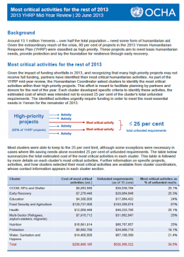

Yemen: Children tormented by landmines and unexploded ordnance
Thirteen-year-old Nakhlah Ramadhan was tending sheep with her younger sister Fatima on the outskirts of the Yemeni capital, Sana'a, when she stepped on a landmine. She was killed instantly; Fatima was seriously injured.
In neighbouring Bani Al-Harith District, Safa’a Luqman and her younger brother, Mohamed, found what they thought was a toy as they were playing outside their home in Bani Jormooz village. The object—a piece of unexploded ordnance—suddenly exploded, permanently disabling Safa’a and blinding Mohamed.
Nakhlah, Safa’a and Mohamed are just three of the many children who have been killed or maimed by landmines or unexploded ordnance in Yemen in recent years. Since the most recent conflict started in July 2011, 71 children have been killed or maimed by these remnants of war, according to a report of the UN Secretary-General.
A tragic legacy of conflict
Landmines have plagued the people of Yemen for decades. In the 1960s, they were laid along the border that separated the north and south of the country, and they were a tragic feature of tensions throughout the 1990s.
More recently, Government and militant forces have been accused of using landmines between 2004 and 2011 in conflicts in Sa’ada Governorate in the north and Abyan Governorate in the south. In 2011 and 2012, antipersonnel mines were reportedly also used in and around Sana’a, and in March 2012, Yemen's Ministry of Defense reported landmine casualties in Hajjah Governorate on the country’s north-west coast.
The number of mine-related civilian casualties climbed significantly in the third quarter of 2012, following an announcement by the military in June that they had ousted militants from Abyan. As a result, thousands of people who had fled the conflict returned home to areas that had been heavily mined.
Mine clearing begins, but funding is short
Efforts are under way to remove the landmines. The Yemen Executive Mine Action Centre (YEMAC) is doing much of this work with the support of the UN Development Programme (UNDP). Between July 2011 and February 2012, YEMAC and its partners destroyed almost 290,000 explosive remnants of war, including almost 90,000 anti-personnel mines as well as anti-vehicle mines, shells and improvised explosive devices.
In addition, with support from the UN Children’s Fund, UNICEF, the Yemen de-mining programme has reached over 1.6 million people with mine-risk education since 1999, and provided more than 2,000 victims with medical and psychological assistance.
But despite this, funding for demining efforts has been low. At the beginning of 2013, UN agencies and their partners appealed for US$13.7 million to clear land and support survivors. So far, only half of the required funding—about $7 million—has been received. As a result, the programme lacks urgently needed equipment, including vehicles.
To fill some of this gap, almost $500,000 has been approved from the OCHA-managed Emergency Response Fund, a country-based pooled fund that provides NGOs and UN agencies with rapid and flexible funding to address critical gaps in humanitarian emergencies. This will help 755 victims of unexploded ordnance and suicide bombings, as well as their families, in Abyan, Hadramaut and Ibb Governorates to regain physical health.
“Mine action is the starting point for all the work to make the houses of returnees safe,” said Rosemary Willey-Al’Sanah, Conflict Prevention and Early Recovery Adviser at UNDP Yemen. “But unless mine action is funded and land cleared, people, especially children, will remain at risk and livelihoods will not be rejuvenated.”
Repeated warnings
This is not the first time that this concern has been raised. In March, OCHA warned that mines were preventing people from returning to their homes in the north.
In mid-July, the humanitarian community called mines “a major hindrance to recovery” and listed the clearing of about 2.6 million m2 of land as one of the most critical humanitarian priorities for 2013.
People living close to mined areas know the dangers only too well. “We are expecting rains and we need to take care of our farms,” said Ahmed Al-Hamdani, a farmer from Bani Jormooz. “But there are mines in the land. Some of those who go to the farms may pay with their lives.”

{kind=link}